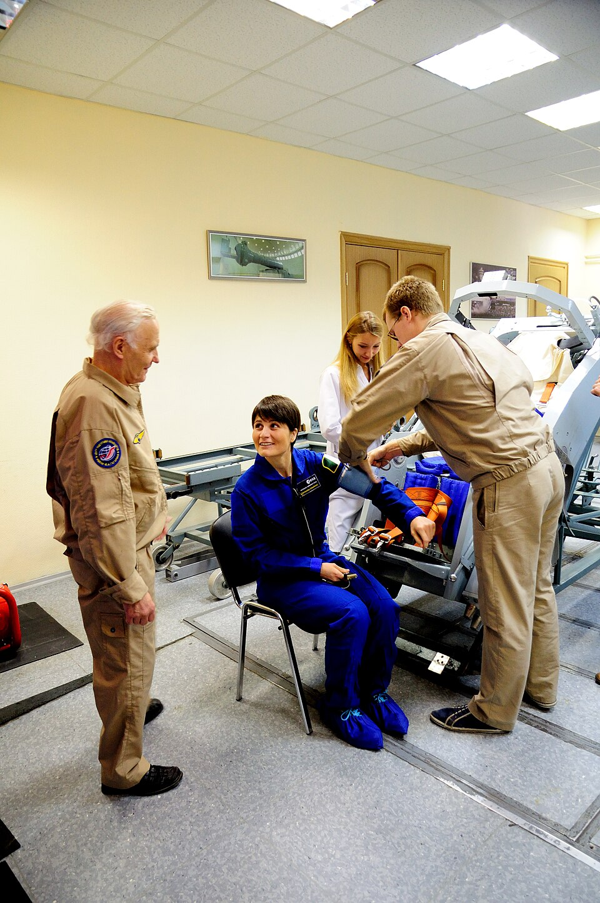

Handball Games vs. High-Intensity Interval Training for Better Health
After 16 weeks, both training groups improved their health compared to the control group. The two workouts produced very similar results, and the differences between SSG and HIIT were not statistically significant (Han et al., 2026).
| Health Measure | SSG | HIIT | Control |
|---|---|---|---|
| Body weight (kg) | -5.24 | -5.94 | -0.59 |
| BMI | -1.77 | -2.00 | -0.24 |
| Systolic blood pressure (mmHg) | -5.90 | -6.27 | -0.60 |
| Diastolic blood pressure (mmHg) | -3.40 | -3.67 | -0.57 |
| Resting heart rate (beats per minute) | -5.47 | -5.93 | -0.63 |
Average change from the start to the end of the 16 weeks. A negative number means the value went down (Han et al., 2026).
Both workouts burn a lot of energy in a short time. HIIT also causes the body to keep burning extra calories after the workout is over (Boutcher, 2011). Handball games mix sprinting, jumping, and quick stops, which burns energy and helps build muscle (Hornstrup et al., 2019).

Lower blood pressure means less strain on the heart and blood vessels. In both the SSG and HIIT groups, systolic and diastolic blood pressure dropped by about 4-5% (Han et al., 2026). Other studies have found similar drops from recreational handball (Póvoas et al., 2018) and from HIIT (Batacan et al., 2017).
Both groups lowered their resting heart rate by more than 5 beats per minute. A lower resting heart rate usually means the heart has become stronger and can pump more blood with each beat, so it does not have to work as hard (Han et al., 2026).